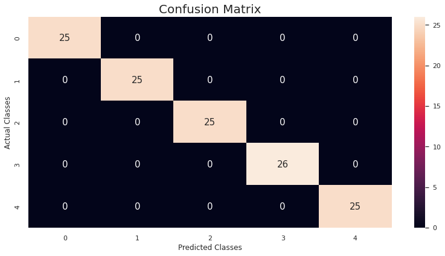

Human Stress Detection in and through Sleep (UAS)#
import pandas as pd
import numpy as np
import matplotlib.pyplot as plt
import seaborn as sns
data= pd.read_csv('/content/drive/MyDrive/datamining/tugas/data/SaYoPillow.csv')
data
| sr | rr | t | lm | bo | rem | sr.1 | hr | sl | |
|---|---|---|---|---|---|---|---|---|---|
| 0 | 93.800 | 25.680 | 91.840 | 16.600 | 89.840 | 99.60 | 1.840 | 74.20 | 3 |
| 1 | 91.640 | 25.104 | 91.552 | 15.880 | 89.552 | 98.88 | 1.552 | 72.76 | 3 |
| 2 | 60.000 | 20.000 | 96.000 | 10.000 | 95.000 | 85.00 | 7.000 | 60.00 | 1 |
| 3 | 85.760 | 23.536 | 90.768 | 13.920 | 88.768 | 96.92 | 0.768 | 68.84 | 3 |
| 4 | 48.120 | 17.248 | 97.872 | 6.496 | 96.248 | 72.48 | 8.248 | 53.12 | 0 |
| ... | ... | ... | ... | ... | ... | ... | ... | ... | ... |
| 625 | 69.600 | 20.960 | 92.960 | 10.960 | 90.960 | 89.80 | 3.440 | 62.40 | 2 |
| 626 | 48.440 | 17.376 | 98.064 | 6.752 | 96.376 | 73.76 | 8.376 | 53.44 | 0 |
| 627 | 97.504 | 27.504 | 86.880 | 17.752 | 84.256 | 101.88 | 0.000 | 78.76 | 4 |
| 628 | 58.640 | 19.728 | 95.728 | 9.728 | 94.592 | 84.32 | 6.728 | 59.32 | 1 |
| 629 | 73.920 | 21.392 | 93.392 | 11.392 | 91.392 | 91.96 | 4.088 | 63.48 | 2 |
630 rows × 9 columns
data.info()
<class 'pandas.core.frame.DataFrame'>
RangeIndex: 630 entries, 0 to 629
Data columns (total 9 columns):
# Column Non-Null Count Dtype
--- ------ -------------- -----
0 sr 630 non-null float64
1 rr 630 non-null float64
2 t 630 non-null float64
3 lm 630 non-null float64
4 bo 630 non-null float64
5 rem 630 non-null float64
6 sr.1 630 non-null float64
7 hr 630 non-null float64
8 sl 630 non-null int64
dtypes: float64(8), int64(1)
memory usage: 44.4 KB
data.rename(columns={'sr': 'snoring rate', 'rr':'respiration rate', 't': 'body temperature', 'lm':'limb movement',
'bo':'blood oxygen', 'rem':'eye movement', 'sr.1':'sleeping hours', 'hr':'heart rate',
'sl':'stress level'}, inplace=True)
data.columns
Index(['snoring rate', 'respiration rate', 'body temperature', 'limb movement',
'blood oxygen', 'eye movement', 'sleeping hours', 'heart rate',
'stress level'],
dtype='object')
data.describe()
| snoring rate | respiration rate | body temperature | limb movement | blood oxygen | eye movement | sleeping hours | heart rate | stress level | |
|---|---|---|---|---|---|---|---|---|---|
| count | 630.000000 | 630.000000 | 630.00000 | 630.000000 | 630.000000 | 630.000000 | 630.000000 | 630.000000 | 630.000000 |
| mean | 71.600000 | 21.800000 | 92.80000 | 11.700000 | 90.900000 | 88.500000 | 3.700000 | 64.500000 | 2.000000 |
| std | 19.372833 | 3.966111 | 3.52969 | 4.299629 | 3.902483 | 11.893747 | 3.054572 | 9.915277 | 1.415337 |
| min | 45.000000 | 16.000000 | 85.00000 | 4.000000 | 82.000000 | 60.000000 | 0.000000 | 50.000000 | 0.000000 |
| 25% | 52.500000 | 18.500000 | 90.50000 | 8.500000 | 88.500000 | 81.250000 | 0.500000 | 56.250000 | 1.000000 |
| 50% | 70.000000 | 21.000000 | 93.00000 | 11.000000 | 91.000000 | 90.000000 | 3.500000 | 62.500000 | 2.000000 |
| 75% | 91.250000 | 25.000000 | 95.50000 | 15.750000 | 94.250000 | 98.750000 | 6.500000 | 72.500000 | 3.000000 |
| max | 100.000000 | 30.000000 | 99.00000 | 19.000000 | 97.000000 | 105.000000 | 9.000000 | 85.000000 | 4.000000 |
data['stress level'].value_counts()
3 126
1 126
0 126
2 126
4 126
Name: stress level, dtype: int64
sns.set(style="whitegrid")
sns.countplot(x='stress level', data=data)
<Axes: xlabel='stress level', ylabel='count'>
sns.pairplot(data, hue='stress level');
Error in callback <function flush_figures at 0x7f6a3cf6f910> (for post_execute):
AttributeErrorTraceback (most recent call last)
/usr/local/lib/python3.10/dist-packages/numpy/core/fromnumeric.py in _wrapreduction(obj, ufunc, method, axis, dtype, out, **kwargs)
74 try:
---> 75 reduction = getattr(obj, method)
76 except AttributeError:
AttributeError: 'list' object has no attribute 'min'
During handling of the above exception, another exception occurred:
KeyboardInterruptTraceback (most recent call last)
/usr/local/lib/python3.10/dist-packages/matplotlib_inline/backend_inline.py in flush_figures()
124 # ignore the tracking, just draw and close all figures
125 try:
--> 126 return show(True)
127 except Exception as e:
128 # safely show traceback if in IPython, else raise
/usr/local/lib/python3.10/dist-packages/matplotlib_inline/backend_inline.py in show(close, block)
88 try:
89 for figure_manager in Gcf.get_all_fig_managers():
---> 90 display(
91 figure_manager.canvas.figure,
92 metadata=_fetch_figure_metadata(figure_manager.canvas.figure)
/usr/local/lib/python3.10/dist-packages/IPython/core/display.py in display(include, exclude, metadata, transient, display_id, *objs, **kwargs)
318 publish_display_data(data=obj, metadata=metadata, **kwargs)
319 else:
--> 320 format_dict, md_dict = format(obj, include=include, exclude=exclude)
321 if not format_dict:
322 # nothing to display (e.g. _ipython_display_ took over)
/usr/local/lib/python3.10/dist-packages/IPython/core/formatters.py in format(self, obj, include, exclude)
178 md = None
179 try:
--> 180 data = formatter(obj)
181 except:
182 # FIXME: log the exception
<decorator-gen-2> in __call__(self, obj)
/usr/local/lib/python3.10/dist-packages/IPython/core/formatters.py in catch_format_error(method, self, *args, **kwargs)
222 """show traceback on failed format call"""
223 try:
--> 224 r = method(self, *args, **kwargs)
225 except NotImplementedError:
226 # don't warn on NotImplementedErrors
/usr/local/lib/python3.10/dist-packages/IPython/core/formatters.py in __call__(self, obj)
339 pass
340 else:
--> 341 return printer(obj)
342 # Finally look for special method names
343 method = get_real_method(obj, self.print_method)
/usr/local/lib/python3.10/dist-packages/IPython/core/pylabtools.py in print_figure(fig, fmt, bbox_inches, base64, **kwargs)
149 FigureCanvasBase(fig)
150
--> 151 fig.canvas.print_figure(bytes_io, **kw)
152 data = bytes_io.getvalue()
153 if fmt == 'svg':
/usr/local/lib/python3.10/dist-packages/matplotlib/backend_bases.py in print_figure(self, filename, dpi, facecolor, edgecolor, orientation, format, bbox_inches, pad_inches, bbox_extra_artists, backend, **kwargs)
2344 if bbox_inches:
2345 if bbox_inches == "tight":
-> 2346 bbox_inches = self.figure.get_tightbbox(
2347 renderer, bbox_extra_artists=bbox_extra_artists)
2348 if pad_inches is None:
/usr/local/lib/python3.10/dist-packages/matplotlib/figure.py in get_tightbbox(self, renderer, bbox_extra_artists)
1742
1743 for a in artists:
-> 1744 bbox = a.get_tightbbox(renderer)
1745 if bbox is not None:
1746 bb.append(bbox)
/usr/local/lib/python3.10/dist-packages/matplotlib/artist.py in get_tightbbox(self, renderer)
365 The enclosing bounding box (in figure pixel coordinates).
366 """
--> 367 bbox = self.get_window_extent(renderer)
368 if self.get_clip_on():
369 clip_box = self.get_clip_box()
/usr/local/lib/python3.10/dist-packages/matplotlib/spines.py in get_window_extent(self, renderer)
195 bboxes.append(bb0)
196
--> 197 return mtransforms.Bbox.union(bboxes)
198
199 def get_path(self):
/usr/local/lib/python3.10/dist-packages/matplotlib/transforms.py in union(bboxes)
652 if not len(bboxes):
653 raise ValueError("'bboxes' cannot be empty")
--> 654 x0 = np.min([bbox.xmin for bbox in bboxes])
655 x1 = np.max([bbox.xmax for bbox in bboxes])
656 y0 = np.min([bbox.ymin for bbox in bboxes])
/usr/local/lib/python3.10/dist-packages/numpy/core/overrides.py in amin(*args, **kwargs)
/usr/local/lib/python3.10/dist-packages/numpy/core/fromnumeric.py in amin(a, axis, out, keepdims, initial, where)
2914 6
2915 """
-> 2916 return _wrapreduction(a, np.minimum, 'min', axis, None, out,
2917 keepdims=keepdims, initial=initial, where=where)
2918
/usr/local/lib/python3.10/dist-packages/numpy/core/fromnumeric.py in _wrapreduction(obj, ufunc, method, axis, dtype, out, **kwargs)
73 if type(obj) is not mu.ndarray:
74 try:
---> 75 reduction = getattr(obj, method)
76 except AttributeError:
77 pass
KeyboardInterrupt:
from mlxtend.preprocessing import minmax_scaling
X = data.drop('stress level', axis=1)
y = pd.DataFrame(data['stress level'])
X_scaled = minmax_scaling(X, columns=X.columns)
from sklearn.feature_selection import mutual_info_regression
mi = pd.DataFrame(mutual_info_regression(X_scaled, y), columns=['MI Scores'], index=X_scaled.columns)
corr = pd.DataFrame(X_scaled[X_scaled.columns].corrwith(y['stress level']), columns=['Correlation'])
s_corr = pd.DataFrame(X_scaled[X_scaled.columns].corrwith(y['stress level'], method='spearman'),
columns=['Spearman_Correlation'])
relation = mi.join(corr)
relation = relation.join(s_corr)
relation.sort_values(by='MI Scores', ascending=False)
| MI Scores | Correlation | Spearman_Correlation | |
|---|---|---|---|
| snoring rate | 1.598725 | 0.975322 | 0.979788 |
| heart rate | 1.594529 | 0.963516 | 0.979785 |
| blood oxygen | 1.594434 | -0.961092 | -0.979785 |
| respiration rate | 1.594097 | 0.963516 | 0.979785 |
| body temperature | 1.593879 | -0.962354 | -0.979785 |
| limb movement | 1.593106 | 0.971071 | 0.979785 |
| eye movement | 1.593043 | 0.951988 | 0.979785 |
| sleeping hours | 1.579019 | -0.973036 | -0.983435 |
from sklearn.model_selection import train_test_split
X_train, X_valid, y_train, y_valid = train_test_split(X_scaled, y, train_size=0.8, test_size=0.2, random_state=42,
stratify = y, shuffle=True)
from sklearn.tree import DecisionTreeClassifier
from sklearn.linear_model import LogisticRegression
from sklearn.naive_bayes import GaussianNB
from sklearn.svm import LinearSVC
from sklearn.svm import SVC
from sklearn.ensemble import RandomForestClassifier
from sklearn.neighbors import KNeighborsClassifier
from sklearn.linear_model import SGDClassifier
from sklearn.ensemble import GradientBoostingClassifier
from sklearn.metrics import accuracy_score
dtc = DecisionTreeClassifier()
lr = LogisticRegression()
gnb = GaussianNB()
lsvc = LinearSVC()
svc = SVC()
rfc = RandomForestClassifier()
knn = KNeighborsClassifier()
sgdc = SGDClassifier()
gbc = GradientBoostingClassifier()
models = [dtc, lr, gnb, lsvc, svc, rfc, knn, sgdc, gbc]
model_name = ['Decision Tree', 'Logistic Regression', 'Gaussian Naive Bayes', 'Linear SVC', 'SVC', 'Random Forest',
'KNN or k-Nearest Neighbors', 'Stochastic Gradient Descent', 'Gradient Boosting']
acc_scores = []
for model in models:
model.fit(X_train, y_train)
y_pred = model.predict(X_valid)
acc_model = round(accuracy_score(y_pred, y_valid) * 100, 2)
acc_scores.append(acc_model)
models_acc = pd.DataFrame({'Model name': model_name, 'Accuracy scores': acc_scores})
models_acc.sort_values(by='Accuracy scores', ascending=False)
| Model name | Accuracy scores | |
|---|---|---|
| 1 | Logistic Regression | 100.00 |
| 2 | Gaussian Naive Bayes | 100.00 |
| 4 | SVC | 100.00 |
| 6 | KNN or k-Nearest Neighbors | 100.00 |
| 3 | Linear SVC | 99.21 |
| 5 | Random Forest | 98.41 |
| 0 | Decision Tree | 97.62 |
| 7 | Stochastic Gradient Descent | 96.83 |
| 8 | Gradient Boosting | 96.83 |
from sklearn.model_selection import RepeatedStratifiedKFold
from sklearn.model_selection import cross_val_score
cv = RepeatedStratifiedKFold(n_splits=5, n_repeats=3)
cv_mean_scores = []
for model in models:
scores = cross_val_score(model, X_scaled, y, cv=cv, scoring='accuracy')
cv_mean_scores.append(scores.mean()*100)
models_val = pd.DataFrame({'Model name': model_name, 'Cross validation mean scores': cv_mean_scores})
models_val.sort_values(by='Cross validation mean scores', ascending=False)
| Model name | Cross validation mean scores | |
|---|---|---|
| 1 | Logistic Regression | 100.000000 |
| 2 | Gaussian Naive Bayes | 100.000000 |
| 4 | SVC | 100.000000 |
| 6 | KNN or k-Nearest Neighbors | 100.000000 |
| 3 | Linear SVC | 99.470899 |
| 5 | Random Forest | 98.994709 |
| 0 | Decision Tree | 98.571429 |
| 8 | Gradient Boosting | 98.412698 |
| 7 | Stochastic Gradient Descent | 95.132275 |
from sklearn.metrics import precision_score, recall_score, f1_score
y_pred = lr.predict(X_valid)
print('Precision score is: {:2f} \nRecall score is: {:2f} \nf1 score is: {:2f}'.format(
precision_score(y_valid, y_pred, average='weighted'),
recall_score(y_valid, y_pred, average='weighted'),
f1_score(y_valid, y_pred, average='weighted')))
Precision score is: 1.000000
Recall score is: 1.000000
f1 score is: 1.000000
from sklearn.metrics import classification_report
report_svc = pd.DataFrame(classification_report(y_valid, y_pred, output_dict=True))
report_svc
| 0 | 1 | 2 | 3 | 4 | accuracy | macro avg | weighted avg | |
|---|---|---|---|---|---|---|---|---|
| precision | 1.0 | 1.0 | 1.0 | 1.0 | 1.0 | 1.0 | 1.0 | 1.0 |
| recall | 1.0 | 1.0 | 1.0 | 1.0 | 1.0 | 1.0 | 1.0 | 1.0 |
| f1-score | 1.0 | 1.0 | 1.0 | 1.0 | 1.0 | 1.0 | 1.0 | 1.0 |
| support | 25.0 | 25.0 | 25.0 | 26.0 | 25.0 | 1.0 | 126.0 | 126.0 |
from sklearn.metrics import confusion_matrix
cm = confusion_matrix(y_valid, y_pred)
cm_dataframe = pd.DataFrame(cm, columns=lr.classes_, index=lr.classes_)
plt.figure(figsize = (12,6));
p = sns.heatmap(cm_dataframe, annot=True, fmt="d", annot_kws={"fontsize":15});
p.set_title('Confusion Matrix', fontsize=20);
p.set_xlabel('Predicted Classes');
p.set_ylabel('Actual Classes');
